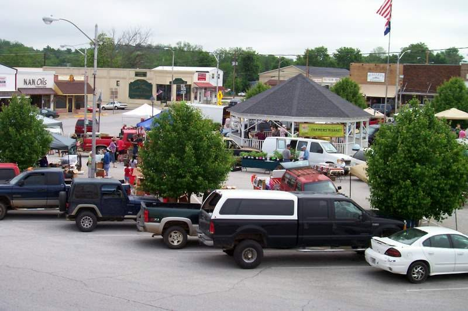

About
A market, run by a nonprofit.
The Ava Farmers Market is sponsored and run by the Ava Growers Project, Inc., a 501(c)(3) nonprofit in Ava, Missouri. The market is the part you see on a Saturday morning. The Project is what keeps it running.
What we do
Every Saturday from April through October, growers and makers set up on the Ava public square from 8am to 12pm. Local produce, plants, meats, eggs, baked goods, handcrafted items and small animals are offered each week, and what is on the tables changes with the season.
The Project exists to support local agriculture in Douglas County and to make it easier for people here to buy food grown nearby. A farmers market is a short supply chain: the person who grew or made the thing is usually the person selling it.
Working with others
The market is a member of the Ava Chamber of Commerce, and University of Missouri Extension has brought a field specialist in agronomy to the gazebo during market hours to take questions on pasture and hay fields, soil samples, weed control, fertilizer and garden plants.
Douglas County Extension Center can be reached on 417-683-4409 or at douglasco@missouri.edu.
The board
Officers of the Ava Growers Project, Inc.
- President Paul Chateauvert
- Vice-President Sarah Marker
- Secretary-Treasurer Matthew Roe
Paul, Sarah and Matt can all be found at the market on a Saturday morning.
Bylaws, rules and meetings
The Project is governed by its bylaws, and the market runs to a set of market rules covering what may be sold and how stalls are run. Both are available on request — email avagrowers@gmail.com and we will send you the current versions.
An annual meeting is held in Ava each March, announced beforehand here, on our Facebook page and in local media.
